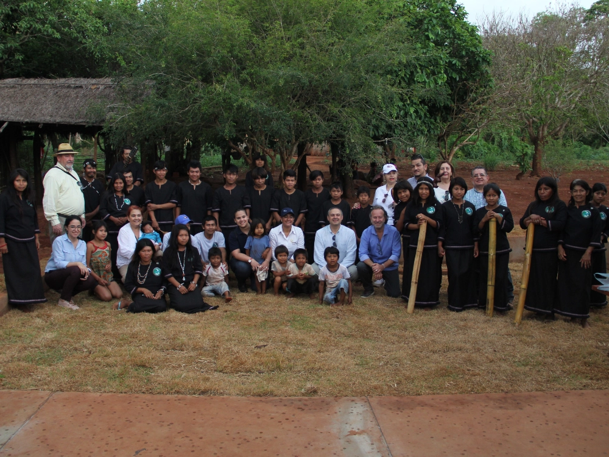

Project description
Indigenous tourism experiences were designed and implemented in communities in Alto Paraná and the Paraguayan Chaco through a co-creation approach aimed at improving quality of life and generating sustainable economic opportunities. The intervention structured circuits and experiences based on heritage enhancement, together with the implementation of key infrastructure such as trails, signage and visitor reception areas. The results included a self-managed tourism model, brands and interpretive content, as well as training in innovation, marketing and guiding, strengthening local capacities, community organization and the sustainability of tourism activity.
← Back to portfolio